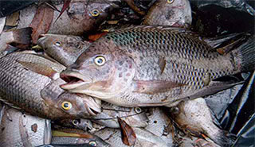

তেলাপিয়া চাষের বড় সমস্যা হলো এর অনিয়ন্ত্রিত বংশ বিস্তার। এই ধরণের অনিয়ন্ত্রিত বংশবিস্তারের কারণে পুকুরে বিভিন্ন আকারের তেলাপিয়া মাছ দেখা যায়। এতে করে আশানুরূপ ফলন পাওয়া যায় না। প্রকৃতিগতভাবেই পুরুষ তেলাপিয়া মাছের দৈহিক বৃদ্ধির হার বেশি। এই ধারণাকেই কাজে লাগিয়ে শুধুমাত্র পুরুষ তেলাপিয়া চাষকেই মনোসেক্স তেলাপিয়া চাষ বলা হয়। এই প্রজাতি সম্পূক খাদ্য গ্রহণে অভ্যস্থ্য, প্রতিকূল পরিবেশেও টিকে থাকে, অধিক ঘনত্বে চাষ করা যায় এবং প্রজননের জন্য পুকুরের পাড়ে গর্ত করে না বিধায় বর্তমানে শুধুমাত্র পুরুষ তেলাপিয়া বা মনোসেক্স তেলাপিয়া চাষে খামারীদের আগ্রহ বাড়ছে।
এ মাছ দ্রুত বেড়ে ওঠে
উচ্চ রোগ প্রতিরোধ ক্ষমতা সম্পন্ন এবং প্রতিকূল পরিবেশে টিকে থাকতে পারে
এ মাছের চাষাবাদ ব্যবস্থাপনা সহজতর।
মনোসেক্স তেলাপিয়া শুধুমাত্র পুরুষ তেলাপিয়া হওয়ায় স্ত্রী তেলাপিয়ার অভাবে প্রজনন সম্পন্ন করতে পারে না।
ফলে পুকুরে বাচ্চা হয় না এবং চাষে কোন বিঘ্ন ঘটে না। সম্পূরক খাবার দিয়ে অধিক ঘনত্বে চাষ করা যায়।
বামনোসেক্স তেলাপিয়া দুই ধাপে অর্থাৎ নার্সারি ও মজুদ পুকুরে চাষ করা হয়। এতে করে কম সময়ে একই পুকুর হতে অনেক বেশি উৎপাদন পাওয়া সম্ভব।
দেড় ফুট থেকে চার ফুট গভীরতার পুকুর তেলাপিয়া নার্সারির জন্য অত্যন্ত উপযোগী। পুকরে নির্বাচনের সময় খেয়াল রাখতে হবে- পুকুরের পাড়সমূহ যেন মজবুত ও বন্যামুক্ত থাকে; পুকুরে পর্যাপ্ত সূর্যের আলো পড়ে; পুকুরটি যেন জলজ আগাছামুক্ত থাকে।
মজুদ পুকুরের গভীরতা কোন সমস্যা নয়। ফলে বেশি গভীরতার পুকুরকেও তেলাপিয়া মাছ চাষে ব্যবহার করা যায়। প্রথমেই সম্পূর্ণ পুকুর শুকিয়ে অথবা বারবার জাল টেনে কিংবা রোটেনন ওষুধ প্রয়োগ করে রাক্ষুসে ও অবাঞ্ছিত মাছ দূর করে নিতে হবে; এরপর প্রতি শতকে ১ কেজি চুন, ৫-৭ কেজি গোবর, ১০০-১৫০ গ্রাম ইউরিয়া, ৫০-৭৫ গ্রাম টিএসপি ও ২০ গ্রাম এমওপি সার প্রয়োগ করতে হবে; সার দেয়ার ৫-৭ দিন পর যখন পুকুরে পর্যাপ্ত প্রাকৃতিক খাবার তৈরি হবে তখন নার্সারি পুকুরে উৎপাদিত ২০-২৫ গ্রাম ওজনের পোনা থেকে প্রতি শতকে ২০০-২৫০ টি হারে পোনা মজুদ করতে হবে; পুকুরে প্রাকৃতিক খাবারের যাতে অভাব না হয় সেজন্য প্রতি ৭ দিন পরপর প্রতি শতকে ৪-৫ কেজি গোবর, ২-৩ কেজি মুরগীর বিষ্ঠা, ৩৫ গ্রাম ইউরিয়া ও ২০ গ্রাম টিএসপি সার দিতে হবে। তবে পরবর্তীতে খাবার প্রয়োগের পরিমান বেড়ে গেলে সার প্রয়োগ বন্ধ করে দিতে হবে। মাছের গড় ওজন যখন ১০০ গ্রামের বেশি হয় তখন থেকেই দৈনিক ৫% হারে পুকুরের পানি পরিবর্তন করে দিলে ভাল ফল পাওয়া যায়। মজুদের ১০০-১২০ দিন পর থেকে মাছের গড় ওজন ২০০-২৫০ গ্রাম হয়ে যায়। তখন থেকেই মাছ বিক্রি করা যেতে পারে। যখন মাছের গড় ওজন ৩০০-৫০০ গ্রাম হয় তখন বাজারের চাহিদার ওপর ভিত্তি করে সব মাছ ধরে ফেলতে হয়।
১. কোনো অনুজীবের যেমন- ভাইরাসব্যকটেরিয়া আক্রমণ
২. পরিবেশগত বিশৃঙ্খলতা
৩. আশেপাশের এলাকায় অতিরিক্ত পরিমাণ রাসায়নিক সার কিংবা আগাছা নাশকের ব্যবহার
৪. খাঁচায় মাছের জন্য অতিরিক্ত খাবার সরবরাহ
৫. প্রতিটি খাঁচায় মাছের অধিক ঘনত্ব
৬. খাঁচার ভেতরের পানির ঢ়ঐ এর তারতম্য
৭. খাঁচায় অক্সিজেন সরবরাহ কম ইত্যাদি।
| রোগের লক্ষণ | ছবি |
|---|---|
| ১. মাছের কানকোর কিছু অংশ বিবর্ণ হয়ে যায়
২. অঙ্কীয়দেশে কিছু অনাকাক্সিক্ষত দাগ দেখা যায়। ৩. মাছের পিত্তথলী স্বাভাবিকের চেয়ে কিছুটা বড় হয়ে যায়। ৪. কেবল ১০০ থেকে ৪০০ গ্রামের মাছেই এই রোগ দেখা যায় ৫. আক্রান্ত- হওয়ার সাথে সাথে মাছ দ্রুত মারা যায়। ৬. মৃত্যুর আগে মাছগুলো কুণ্ডলি আকারে ঘোরাফেরা করে। |
 |

© সর্বস্বত্ব সংরক্ষিত বাংলার কৃষক